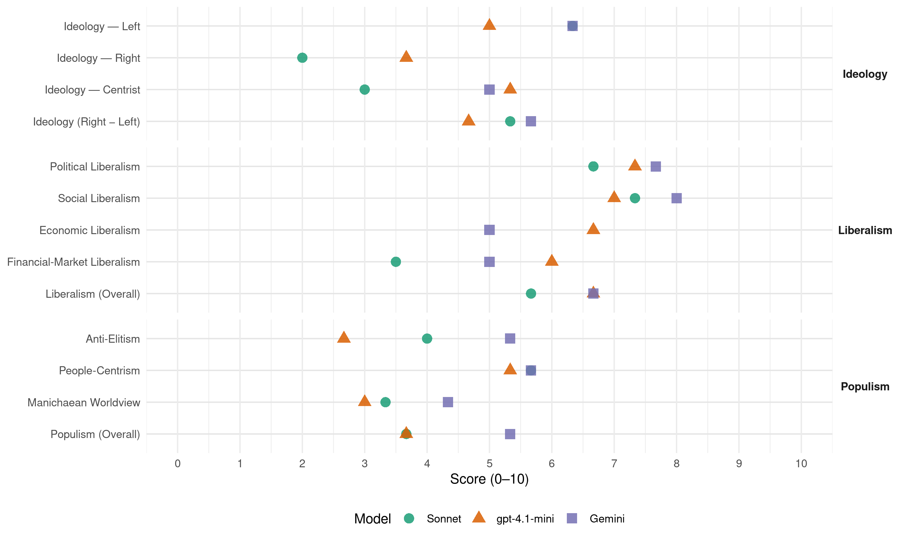

PRI (Mexico, 2003)
manifesto_id 171301_200306
Get full text: This site shows derived annotations and short verbatim quotes only. The full manifesto text is © Manifesto Project / WZB — obtain it via manifesto-project.wzb.eu using the manifesto_id above.
Headline scores
| Dimension | Sonnet | gpt-4.1-mini | Gemini |
|---|---|---|---|
| Populism (Overall) | 3.7 | 3.7 | 5.3 |
| Anti-Elitism | 4.0 | 2.7 | 5.3 |
| People-Centrism | 5.7 | 5.3 | 5.7 |
| Manichaean Worldview | 3.3 | 3.0 | 4.3 |
| Ideology (Right − Left) | 5.3 | 4.7 | 5.7 |
| Liberalism (Overall) | 5.7 | 6.7 | 6.7 |
| Political Liberalism | 6.7 | 7.3 | 7.7 |
| Social Liberalism | 7.3 | 7.0 | 8.0 |
| Economic Liberalism | – | 6.7 | 5.0 |
| Financial-Market Liberalism | 3.5 | 6.0 | 5.0 |
Evidence per dimension
Economic Liberalism
Gemini · score 6.0 · verified · chunk 1
“abrirlos a la competencia internacional y ala inversión privada”
se impulsaron reformas en diversos sectores económicos para abrirlos a la competencia internacional y ala inversión privada.
Gemini · score 4.0 · verified · chunk 2
“promover un mercado competitivo y accesible”
especialmente la población con ingresos menores ados salarios mínimos. Diseñar y proponer una estrategia que permita, promover un mercado competitivo y accesible en materia de financiamiento de vivienda.
Gemini · score 5.0 · mixed · chunk 3
“desregulación de trámites empresariales”
Impulsar un programa efectivo de desregulación de trámites empresariales y fiscales.
gpt-4.1-mini · score 6.0 · verified · chunk 1
“abrir nuestra economía al comercio internacional e incorporarnos posteriormente al Acuerdo General sobre Comercio y Aranceles (GATT)”
Así, hacia mediados de los ochenta, el gobierno mexicano, tomó la decisión de abrir nuestra economía al comercio internacional e incorporarnos posteriormente al Acuerdo General sobre Comercio y Aranceles (GATT); años más tarde, este proceso de apertura se aceleró con la firma de tratados de libre comercio,
gpt-4.1-mini · score 7.0 · verified · chunk 2
“apoyaremos a las micro, pequeñas y medianas empresas para que se integren de manera eficiente alas cadenas productivas ytengas acceso atecnologías de punta”
Para iniciar la disminución de la brecha económica entre las personas, impulsaremos la educación y la capacitación para el empleo, reformaremos a las instituciones públicas para que no se conviertan en obstáculos a las iniciativas de la gente en la forma de trámites y requisitos burocráticos y apoyaremos a las micro, pequeñas y medianas empresas para que se integren de manera eficiente alas cadenas productivas ytengas acceso atecnologías de punta. A diferencia de quienes hoy están a cargo del gobierno, el PRI sí respalda políticas responsables y con sentido social, en especial las que buscan una mayor equidad.
gpt-4.1-mini · score 7.0 · verified · chunk 3
“apoyar la competitividad de las micro, pequeñas y medianas empresas”
Promoveremos la transformación de la banca de desarrollo en un instrumento eficaz de fomento económico que apoye el desarrollo regional, y la competitividad de las micro, pequeñas y medianas empresas.
Sonnet · score 4.0 · mixed · chunk 1
“apertura comercial y de capitales”
se aceleró en el mundo, a finales de la década de los ochenta la apertura comercial y de capitales, lo que ahora se denomina globalización
Sonnet · score 4.0 · mixed · chunk 2
“mercado competitivo y accesible en materia”
Diseñar y proponer una estrategia que permita, promover un mercado competitivo y accesible en materia de financiamiento de vivienda
Sonnet · score 5.0 · mixed · chunk 3
“buenas reglas para la competencia internacional”
si no tenemos buenas reglas para la competencia internacional, nuestras empresas, sin importar su tamaño, tendrán que competir en condiciones de desventaja
Financial-Market Liberalism
Gemini · score 5.0 · verified · chunk 1
“desregulación de los mercados -destacadamente de los financieros”
eliminación de restricciones al comercio, a los flujos de capital y de inversión extranjera directa, la desregulación de los mercados -destacadamente de los financieros-y la regionalización
Gemini · score 5.0 · verified · chunk 2
“desarrollar un mercado hipotecario que canalice el ahorro privado”
para que éstos sean verdaderamente progresivos, Impulsaremos una reforma jurídica para desarrollar un mercado hipotecario que canalice el ahorro privado al sector de la vivienda y reduzca los costos
Gemini · score 5.0 · verified · chunk 3
“funcionamiento de la banca de desarrollo”
Vigilar el funcionamiento de la banca de desarrollo para que proporcione instrumentos que le permitan
gpt-4.1-mini · score 6.0 · verified · chunk 1
“la desregulación de los mercados -destacadamente de los financieros-”
Este proceso, influido por los gobiernos de los países con economías más desarrolladas, por los organismos financieros internacionales y las grandes corporaciones multinacionales, se caracterizó por la eliminación de restricciones al comercio, a los flujos de capital y de inversión extranjera directa, la desregulación de los mercados -destacadamente de los financieros-y la regionalización de los procesos productivos.
gpt-4.1-mini · score 6.0 · verified · chunk 3
“vigilar que el SAT opere de manera eficiente, amplíe la base de contribuyentes”
Desde el Congreso: Vigilaremos que el SAT opere de manera eficiente, amplíe la base de contribuyentes, disminuya la evasión y la elusión fiscales y que cumpla con los objetivos de seguridad jurídica del contribuyente y de la recaudación, simplificación administrativa para el fácil cumplimiento de las obligaciones y se reduzca el costo de la propia recaudación de acuerdo con las reformas impulsadas y aprobadas.
Sonnet · score 4.0 · mixed · chunk 1
“mercado hipotecario que canalice el ahorro privado”
Impulsaremos una reforma jurídica para desarrollar un mercado hipotecario que canalice el ahorro privado al sector de la vivienda y reduzca los costos de los créditos.
Sonnet · score 3.0 · verified · chunk 2
“Abrogar el sistema de unidades de inversión”
Abrogar el sistema de unidades de inversión (Udis) en operaciones hipotecarias y modificar la legislación civil, mercantil y bancaria
Sonnet · score 4.0 · verified · chunk 3
“banca de desarrollo en un instrumento eficaz”
Promoveremos la transformación de la banca de desarrollo en un instrumento eficaz de fomento económico que apoye el desarrollo regional
Political Liberalism
Gemini · score 8.0 · verified · chunk 1
“establecer las bases de un gobierno democrático”
tuvieron la sensibilidad de crear instituciones para establecer las bases de un gobierno democrático; extender los beneficios
Gemini · score 7.0 · verified · chunk 2
“valores nacionales y el respeto a los derechos humanos”
Como uno de los instrumentos para el desarrollo social, la educación tiene que promover el fortalecimiento de los valores nacionales y el respeto a los derechos humanos, y tener la consigna de generar una cultura
Gemini · score 8.0 · verified · chunk 3
“un Poder Judicial autónomo, imparcial”
y certeza legal, así como la aplicación expedita de la ley, el funcionamiento de un Poder Judicial autónomo, imparcial, honesto y eficiente
gpt-4.1-mini · score 7.0 · verified · chunk 1
“la democracia; la soberanla sobre nuestras riquezas naturales; una política exterior nacionalista y pacifista”
Entre los que destacan: la democracia; la soberanla sobre nuestras riquezas naturales; una política exterior nacionalista y pacifista, de pleno respeto a la comunidad internacional; la tolerancia; la educación laica; los derechos de nuestros trabajadores y campesinos;
gpt-4.1-mini · score 7.0 · verified · chunk 2
“Nuestra Constitución, al incluir en los derechos sociales a la vivienda, creó los instrumentos para construir una sociedad igualitaria y justa”
Una casa, un hogar, significa mucho más que un espacio físico donde habitar. Ella es el asiento de la familia mexicana, la cual es, como todos sabemos, la base de la sociedad. Así pues, contar con una vivienda se traduce en la posibilidad de vivir en un ambiente que puede ofrecer seguridad, abrigo yconfianza aquienes la habitan, Nuestra Constitución, al incluir en los derechos sociales a la vivienda, creó los instrumentos para construir una sociedad igualitaria y justa. Por ello, el PRI se pronuncia para que toda familia pueda contar con una vivienda digna y un entorno sano y sustentable para el desarrollo de sus integrantes.
gpt-4.1-mini · score 8.0 · verified · chunk 3
“fortaleceremos las instancias que permitan que los principios de transparencia y rendición de cuentas”
Desde el Congreso, seguiremos promoviendo la democracia, Para ello: Fortaleceremos las instancias que permitan que los principios de transparencia y rendición de cuentas sobre los asuntos y los fondos públicos prevalezcan en las instituciones que regulan la democracia.
Sonnet · score 7.0 · verified · chunk 1
“comprometidos con la democracia y la justicia social”
El PRI es la mejor opción para la mayoría de los mexicanos porque estamos comprometidos con la democracia y la justicia social.
Sonnet · score 6.0 · verified · chunk 2
“democrática, laica, gratuita y obligatoria”
nuestra Constitución la considera un derecho de los individuos y una obligación del Estado. Más aún, establece que debe ser democrática, laica, gratuita y obligatoria
Sonnet · score 7.0 · verified · chunk 3
“democracia como la única vía posible”
los priistas creemos en la democracia como la única vía posible para gobernar y para elegir a nuestros gobernantes
Liberalism (Overall)
Gemini · score 7.0 · verified · chunk 1
“establecer las bases de un gobierno democrático”
tuvieron la sensibilidad de crear instituciones para establecer las bases de un gobierno democrático; extender los beneficios
Gemini · score 6.0 · verified · chunk 2
“promover un mercado competitivo y accesible”
especialmente la población con ingresos menores ados salarios mínimos. Diseñar y proponer una estrategia que permita, promover un mercado competitivo y accesible en materia de financiamiento de vivienda.
Gemini · score 7.0 · verified · chunk 3
“un Poder Judicial autónomo, imparcial”
y certeza legal, así como la aplicación expedita de la ley, el funcionamiento de un Poder Judicial autónomo, imparcial, honesto y eficiente
gpt-4.1-mini · score 6.0 · verified · chunk 1
“abrir nuestra economía al comercio internacional e incorporarnos posteriormente al Acuerdo General sobre Comercio y Aranceles (GATT)”
Así, hacia mediados de los ochenta, el gobierno mexicano, tomó la decisión de abrir nuestra economía al comercio internacional e incorporarnos posteriormente al Acuerdo General sobre Comercio y Aranceles (GATT); años más tarde, este proceso de apertura se aceleró con la firma de tratados de libre comercio,
gpt-4.1-mini · score 7.0 · verified · chunk 2
“Nuestra Constitución, al incluir en los derechos sociales a la vivienda, creó los instrumentos para construir una sociedad igualitaria y justa”
Una casa, un hogar, significa mucho más que un espacio físico donde habitar. Ella es el asiento de la familia mexicana, la cual es, como todos sabemos, la base de la sociedad. Así pues, contar con una vivienda se traduce en la posibilidad de vivir en un ambiente que puede ofrecer seguridad, abrigo yconfianza aquienes la habitan, Nuestra Constitución, al incluir en los derechos sociales a la vivienda, creó los instrumentos para construir una sociedad igualitaria y justa. Por ello, el PRI se pronuncia para que toda familia pueda contar con una vivienda digna y un entorno sano y sustentable para el desarrollo de sus integrantes.
gpt-4.1-mini · score 7.0 · verified · chunk 3
“fortaleceremos las instancias que permitan que los principios de transparencia y rendición de cuentas”
Desde el Congreso, seguiremos promoviendo la democracia, Para ello: Fortaleceremos las instancias que permitan que los principios de transparencia y rendición de cuentas sobre los asuntos y los fondos públicos prevalezcan en las instituciones que regulan la democracia.
Sonnet · score 6.0 · verified · chunk 1
“comprometidos con la democracia y la justicia social”
El PRI es la mejor opción para la mayoría de los mexicanos porque estamos comprometidos con la democracia y la justicia social.
Sonnet · score 5.0 · verified · chunk 2
“equidad de género, la no discriminación”
promover el fortalecimiento de los valores nacionales y el respeto a los derechos humanos, y tener la consigna de generar una cultura para la paz, la tolerancia, la democracia, la equidad de género, la no discriminación
Sonnet · score 6.0 · verified · chunk 3
“democracia como la única vía posible”
los priistas creemos en la democracia como la única vía posible para gobernar y para elegir a nuestros gobernantes
Anti-Elitism
Gemini · score 6.0 · verified · chunk 1
“incapacidad y el incumplimiento del gobierno actual”
Enfrenta condiciones políticas en las que resaltan la incapacidad y el incumplimiento del gobierno actual, que no sabe estar a la altura
Gemini · score 6.0 · verified · chunk 2
“insensibilidad social de llamado gobierno del cambio”
en las condiciones en que se está dando la desgravación acordada en el TLCAN, viene a reafirmar la insensibilidad social de llamado gobierno del cambio. Sobre todo porque mientras en Estados Unidos
Gemini · score 4.0 · verified · chunk 3
“entregar la electricidad a intereses extranjeros”
El Ejecutivo Federal ha recurrido a todo tipo de maniobras yfalsedades para entregar la electricidad a intereses extranjeros, manipulando el
gpt-4.1-mini · score 3.0 · verified · chunk 1
“la incapacidad y el incumplimiento del gobierno actual”
Enfrenta condiciones políticas en las que resaltan la incapacidad y el incumplimiento del gobierno actual, que no sabe estar a la altura de sus compromisos de campaña, de las expectativas generadas a la ’gente y de las exigencias de la historia,
gpt-4.1-mini · score 2.0 · verified · chunk 2
“la falta de crecimiento amplia la brecha entre los que tienen y los que no tienen”
Durante los últimos dos años el crecimiento económico en México ha sido prácticamente inexistente. La economía no muestra mejorla y se encuentra lejos aún de reflejarse en la recuperación de los empleos perdidos y mucho menos en la generación de nuevos puestos de trabajo, Además de las consecuencias que esto tiene en la economla familiar, su impacto en el ánimo de la población es catastrófico: genera angustia, inseguridad, desesperación e inquietud social. Consideramos como grave error del actual gobierno el esperar que la economla estadounidense recupere el crecimiento para que nuestra economía pueda crecer también, Esta estrategia equivocada nos ha llevado al estancamiento. La falta de crecimiento amplia la brecha entre los que tienen y los que no tienen. Así la brecha en sí misma también se convierte en un obstáculo para el desarrollo económico, Por ello, el Partido promoverá ante todo el crecimiento económico con un énfasis en la creación de empleos, Para iniciar la disminución de la brecha económica entre las personas, impulsaremos la educación y la capacitación para el empleo, reformaremos a las instituciones públicas para que no se conviertan en obstáculos a las iniciativas de la gente en la forma de trámites y requisitos burocráticos y apoyaremos a las micro, pequeñas y medianas empresas para que se integren de manera eficiente alas cadenas productivas ytengas acceso atecnologías de punta. A diferencia de quienes hoy están a cargo del gobierno, el PRI sí respalda políticas responsables y con sentido social, en especial las que buscan una mayor equidad.
gpt-4.1-mini · score 3.0 · verified · chunk 3
“la impunidad es el principal alimento de la corrupción”
La impunidad es el principal alimento de la corrupción. La corrupción es el cáncer más peligroso para la vida del Estado. En el pasado advertimos que muchos servidores públicos incurrian en prácticas deshonestas que denigraban el apostolado de la función pública.
Sonnet · score 4.0 · mixed · chunk 1
“incapacidad y el incumplimiento del gobierno actual”
resaltan la incapacidad y el incumplimiento del gobierno actual, que no sabe estar a la altura de sus compromisos de campaña
Sonnet · score 5.0 · verified · chunk 2
“maniobras y falsedades para entregar la electricidad”
El Ejecutivo Federal ha recurrido a todo tipo de maniobras yfalsedades para entregar la electricidad a intereses extranjeros
Sonnet · score 3.0 · verified · chunk 3
“maniobras y falsedades para entregar la electricidad”
El Ejecutivo Federal ha recurrido a todo tipo de maniobras yfalsedades para entregar la electricidad a intereses extranjeros
Ideology — Centrist
Gemini · score 5.0 · verified · chunk 1
“representar sus intereses en la Cámara de Diputados”
principal las propuestas de la militancia, de los simpatizantes y de la ciudadanía en general para representar sus intereses en la Cámara de Diputados.
gpt-4.1-mini · score 6.0 · verified · chunk 1
“la Plataforma toma como punto de referencia principal las propuestas de la militancia”
Esta condición es muy significativa para nosotros ya que, al no existir el vínculo con el Presidente de la República, la Plataforma toma como punto de referencia· principal las propuestas de la militancia, de los simpatizantes y de la ciudadanía en general para representar sus intereses en la Cámara de Diputados.
gpt-4.1-mini · score 5.0 · verified · chunk 2
“la familia rural sea el primer eslabón de la cadena productiva y eje central del desarrollo rural”
El PRI se pronuncia para que la familia rural sea el primer eslabón de la cadena productiva y eje central del desarrollo rural. Hay que brindar apoyo a quienes habitan el campo y lo hacen producir, para que eleven su nivel de vida y capacidad de organización, reciban lo que en justicia les corresponde yse sientan orgullosos de su origen y compromiso con la Nación. Nuestro Partido pugna por el desarrollo integral de la sociedad rural, con base en una competitividad económica que’favorezca su autosuficiencia, genere las condiciones de bienestar que demandan sus habitantes, produzca alimentos, diversifique sus actividades productivas participando en el comercio y los servicios en general y respete las particularidades regionales del país, como se desprende de los artículos 25,26 Y27 de la Constitución Politica de los Estados Unidos Mexicanos.
gpt-4.1-mini · score 5.0 · verified · chunk 3
“participación ciudadana es fundamental”
Promover la participación ciudadana es fundamental, para lo cual proponemos: Impulsar campañas de participación ciudadana que involucren a la población en proyectos de desarrollo. Abrir concursos públicos que estimulen la acción civil.
Sonnet · score 3.0 · verified · chunk 1
“partido democrático, abierto, plural, tolerante”
somos un partido democrático, abierto, plural, tolerante e incluyente, en el que se refleja la rica diversidad de México
Sonnet · score 3.0 · verified · chunk 2
“justicia social es principio y objetivo prioritario”
para nuestro Partido la justicia social es principio y objetivo prioritario
Sonnet · score 3.0 · verified · chunk 3
“intereses nacionales sobre los comerciales”
Colocar los intereses nacionales sobre los comerciales y defender los derechos humanos de los trabajadores
Ideology — Left
Gemini · score 6.0 · verified · chunk 1
“comprometidos con la democracia y la justicia social”
El PRI es la mejor opción para la mayoría de los mexicanos porque estamos comprometidos con la democracia y la justicia social.
Gemini · score 7.0 · verified · chunk 2
“justicia social es principio y objetivo prioritario”
recoge lo más avanzado del pensamiento social que a lo largo de la historia mexicana ha reivindicado al trabajo y al trabajador. Por ello, para nuestro Partido la justicia social es principio y objetivo prioritario. Dado que el trato igual a desiguales
Gemini · score 6.0 · verified · chunk 3
“propiedad de la Nación”
industrias estratégicas, deben seguir siendo propiedad de la Nación, Está demostrado que el sector eléctrico
gpt-4.1-mini · score 5.0 · verified · chunk 1
“comprometidos con la democracia y la justicia social”
El PRI es la mejor opción para la mayoría de los mexicanos porque estamos comprometidos con la democracia y la justicia social.
gpt-4.1-mini · score 6.0 · verified · chunk 2
“el PRI sí respalda políticas responsables y con sentido social, en especial las que buscan una mayor equidad”
Para iniciar la disminución de la brecha económica entre las personas, impulsaremos la educación y la capacitación para el empleo, reformaremos a las instituciones públicas para que no se conviertan en obstáculos a las iniciativas de la gente en la forma de trámites y requisitos burocráticos y apoyaremos a las micro, pequeñas y medianas empresas para que se integren de manera eficiente alas cadenas productivas ytengas acceso atecnologías de punta. A diferencia de quienes hoy están a cargo del gobierno, el PRI sí respalda políticas responsables y con sentido social, en especial las que buscan una mayor equidad.
gpt-4.1-mini · score 4.0 · verified · chunk 3
“la justicia social”
El PRI proclama la vigencia de los principios sociales y las decisiones fundamentales de la Constitución de 1917. El Partido reconoce a la Carta Magna como un cuerpo de principios, valores y normas que representa el pacto fundamental de los mexicanos. Por lo anterior, dos principios rigen las acciones de los priistas: nuestra convicción democrática y nuestro compromiso con la justicia social.
Sonnet · score 6.0 · verified · chunk 1
“justicia social y la ciudadanía plena”
postula para la construcción de un futuro más justo, el desarrollo integral, la justicia social y la ciudadanía plena para los indígenas
Sonnet · score 7.0 · verified · chunk 2
“defensa de los artículos 27 y 28”
El PRI se pronuncia por la defensa de los artículos 27 y 28 de nuestra Carta Magna en materia energética, oponiéndose a privatización
Sonnet · score 6.0 · verified · chunk 3
“petróleo y la energía eléctrica, como industrias estratégicas”
el petróleo y la energía eléctrica, como industrias estratégicas, deben seguir siendo propiedad de la Nación
Ideology (Right − Left)
Gemini · score 6.0 · verified · chunk 1
“comprometidos con la democracia y la justicia social”
El PRI es la mejor opción para la mayoría de los mexicanos porque estamos comprometidos con la democracia y la justicia social.
Gemini · score 6.0 · verified · chunk 2
“justicia social es principio y objetivo prioritario”
recoge lo más avanzado del pensamiento social que a lo largo de la historia mexicana ha reivindicado al trabajo y al trabajador. Por ello, para nuestro Partido la justicia social es principio y objetivo prioritario. Dado que el trato igual a desiguales
Gemini · score 5.0 · verified · chunk 3
“propiedad de la Nación”
industrias estratégicas, deben seguir siendo propiedad de la Nación, Está demostrado que el sector eléctrico
gpt-4.1-mini · score 5.0 · verified · chunk 1
“comprometidos con la democracia y la justicia social”
El PRI es la mejor opción para la mayoría de los mexicanos porque estamos comprometidos con la democracia y la justicia social.
gpt-4.1-mini · score 5.0 · verified · chunk 2
“el PRI sí respalda políticas responsables y con sentido social, en especial las que buscan una mayor equidad”
Para iniciar la disminución de la brecha económica entre las personas, impulsaremos la educación y la capacitación para el empleo, reformaremos a las instituciones públicas para que no se conviertan en obstáculos a las iniciativas de la gente en la forma de trámites y requisitos burocráticos y apoyaremos a las micro, pequeñas y medianas empresas para que se integren de manera eficiente alas cadenas productivas ytengas acceso atecnologías de punta. A diferencia de quienes hoy están a cargo del gobierno, el PRI sí respalda políticas responsables y con sentido social, en especial las que buscan una mayor equidad.
gpt-4.1-mini · score 4.0 · verified · chunk 3
“la justicia social”
El PRI proclama la vigencia de los principios sociales y las decisiones fundamentales de la Constitución de 1917. El Partido reconoce a la Carta Magna como un cuerpo de principios, valores y normas que representa el pacto fundamental de los mexicanos. Por lo anterior, dos principios rigen las acciones de los priistas: nuestra convicción democrática y nuestro compromiso con la justicia social.
Sonnet · score 5.0 · verified · chunk 1
“justicia social y la ciudadanía plena”
postula para la construcción de un futuro más justo, el desarrollo integral, la justicia social y la ciudadanía plena para los indígenas
Sonnet · score 6.0 · verified · chunk 2
“no se otorgarán concesiones a los particulares”
corresponde exclusivamente a la Nación generar, conducir, transformar, distribuir y abastecer energía eléctrica; no se otorgarán concesiones a los particulares
Sonnet · score 5.0 · verified · chunk 3
“petróleo y la energía eléctrica, como industrias estratégicas”
el petróleo y la energía eléctrica, como industrias estratégicas, deben seguir siendo propiedad de la Nación
Ideology — Right
gpt-4.1-mini · score 4.0 · verified · chunk 1
“una política exterior nacionalista y pacifista”
Entre los que destacan: la democracia; la soberanla sobre nuestras riquezas naturales; una política exterior nacionalista y pacifista, de pleno respeto a la comunidad internacional; la tolerancia; la educación laica; los derechos de nuestros trabajadores y campesinos;
gpt-4.1-mini · score 4.0 · verified · chunk 2
“El Ejecutivo Federal ha recurrido a todo tipo de maniobras yfalsedades para entregar la electricidad a intereses extranjeros”
La contratación de servicios por los organismos del sector energético está siendo cuestionada. Los priistas nos pronunciamos porque los contratos denominados de “Servicios Múltiples” sean revisados de acuerdo al marco constitucional. El Ejecutivo Federal ha recurrido a todo tipo de maniobras yfalsedades para entregar la electricidad a intereses extranjeros,
gpt-4.1-mini · score 3.0 · verified · chunk 3
“defender la soberanía nacional”
El PRI se pronuncia por una soberanía que no claudique ante las fuerzas del mercado; que las regule pero no las nulifique; favorecemos los intercambios económicos, sociales, comerciales, culturales y políticos, así como la cooperación para combatir amenazas comunes, epidemias, delincuencia organizada, narcotráfico y terrorismo, sin atentar contra las bases soberanas del Estado Mexicano.
Sonnet · score 2.0 · verified · chunk 1
“política exterior nacionalista y pacifista”
una política exterior nacionalista y pacifista, de pleno respeto a la comunidad internacional
Sonnet · score 2.0 · verified · chunk 2
“fortalecer nuestra identidad como Nación”
sólo defendiendo nuestras expresiones culturales, lograremos conservar nuestra identidad como Nación
Sonnet · score 2.0 · verified · chunk 3
“defender nuestra identidad, dignidad, creencias y cultura”
Defender y preservar nuestra identidad, dignidad, creencias y cultura en el ámbito mundial
Manichaean Worldview
Gemini · score 4.0 · verified · chunk 1
“no en sueños ni en intereses de grupos”
Basada en hechos concretos, está fundamentada en realidades y no en sueños ni en intereses de grupos, Nos hemos propuesto metas
Gemini · score 6.0 · verified · chunk 2
“maniobras yfalsedades para entregar la electricidad a intereses extranjeros”
de acuerdo al marco constitucional. El Ejecutivo Federal ha recurrido a todo tipo de maniobras yfalsedades para entregar la electricidad a intereses extranjeros,
Gemini · score 3.0 · verified · chunk 3
“todo tipo de maniobras yfalsedades”
El Ejecutivo Federal ha recurrido a todo tipo de maniobras yfalsedades para entregar la electricidad a intereses extranjeros
gpt-4.1-mini · score 3.0 · verified · chunk 1
“nos está llevando por el camino de la incertidumbre”
En nuestra Plataforma Electoral dejaremos claro a la ciudadanía, con los hechos en la mano, que este gobierno no ha cumplido sus promesas, y que al contrario, nos está llevando por el camino de la incertidumbre y la falta de crecimiento económico y la dependencia internacional.
gpt-4.1-mini · score 3.0 · verified · chunk 2
“El Ejecutivo Federal ha recurrido a todo tipo de maniobras yfalsedades para entregar la electricidad a intereses extranjeros”
La contratación de servicios por los organismos del sector energético está siendo cuestionada. Los priistas nos pronunciamos porque los contratos denominados de “Servicios Múltiples” sean revisados de acuerdo al marco constitucional. El Ejecutivo Federal ha recurrido a todo tipo de maniobras yfalsedades para entregar la electricidad a intereses extranjeros,
gpt-4.1-mini · score 3.0 · verified · chunk 3
“confrontación, conflicto y controversia parecen ser las constantes”
La política exterior del gobierno federal ha estado vinculada a criterios contradictorios entre sí y con nuestra tradición histórica, creando confusión entre nuestros amigos y aliados internacionales y afectando incluso nuestra capacidad de negociación sobre los intereses más importantes de México, Confrontación, conflicto y controversia parecen ser las constantes de la política exterior mexicana actual, aún con nuestros vecinos naturales.
Sonnet · score 3.0 · verified · chunk 1
“nos está llevando por el camino de la incertidumbre”
este gobierno no ha cumplido sus promesas, y que al contrario, nos está llevando por el camino de la incertidumbre y la falta de crecimiento económico
Sonnet · score 4.0 · verified · chunk 2
“contubernios que lastiman al campo de México”
para que podamos juntos evitar errores y contubernios que lastiman al campo de México
Sonnet · score 3.0 · verified · chunk 3
“Confrontación, conflicto y controversia parecen”
Confrontación, conflicto y controversia parecen ser las constantes de la política exterior mexicana actual
People-Centrism
Gemini · score 7.0 · verified · chunk 1
“El pueblo seguirá siendo nuestra prioridad”
Queremos seguir siendo el partido· mayoritario, El pueblo seguirá siendo nuestra prioridad y seguiremos trabajando por sus intereses
Gemini · score 5.0 · verified · chunk 2
“semilleros de maestros comprometidos con las clases populares”
y permanencia de las Escuelas Normales en sus diferentes modalidades, semilleros de maestros comprometidos con las clases populares. Impulsar la obligatoriedad del aprendizaje de idiomas
Gemini · score 5.0 · verified · chunk 3
“compromiso básico del PRles con el pueblo”
olvidar que el compromiso básico del PRles con el pueblo de México, con sus necesidades y aspiraciones.
gpt-4.1-mini · score 6.0 · verified · chunk 1
“El pueblo seguirá siendo nuestra prioridad”
Queremos seguir siendo el partido· mayoritario, El pueblo seguirá siendo nuestra prioridad y seguiremos trabajando por sus intereses y los de la Nación.
gpt-4.1-mini · score 6.0 · verified · chunk 2
“la familia rural sea el primer eslabón de la cadena productiva y eje central del desarrollo rural”
El PRI se pronuncia para que la familia rural sea el primer eslabón de la cadena productiva y eje central del desarrollo rural. Hay que brindar apoyo a quienes habitan el campo y lo hacen producir, para que eleven su nivel de vida y capacidad de organización, reciban lo que en justicia les corresponde yse sientan orgullosos de su origen y compromiso con la Nación. Nuestro Partido pugna por el desarrollo integral de la sociedad rural, con base en una competitividad económica que’favorezca su autosuficiencia, genere las condiciones de bienestar que demandan sus habitantes, produzca alimentos, diversifique sus actividades productivas participando en el comercio y los servicios en general y respete las particularidades regionales del país, como se desprende de los artículos 25,26 Y27 de la Constitución Politica de los Estados Unidos Mexicanos.
gpt-4.1-mini · score 4.0 · verified · chunk 3
“los priistas estamos construyendo el México que necesitamos”
Entendemos la participación ciudadana como la actividad de mujeres, jóvenes, adultos y niños para un solo fin: el bienestar comunitario. Los priistas estamos construyendo el México que necesitamos. Para ello será un factor de primer orden la participación ciudadana en pueblos, barrios, colonias y unidades habitacionales,
Sonnet · score 7.0 · verified · chunk 1
“El pueblo seguirá siendo nuestra prioridad”
Queremos seguir siendo el partido mayoritario, El pueblo seguirá siendo nuestra prioridad y seguiremos trabajando por sus intereses y los de la Nación.
Sonnet · score 6.0 · verified · chunk 2
“garantizar a todos los mexicanos”
una reforma que dé a México un Sistema Nacional de Pensiones que garantice a todos los mexicanos, trabajadores, pensionados y jubilados una pensión justa y digna
Sonnet · score 4.0 · verified · chunk 3
“compromiso básico del PRI es con el pueblo”
el compromiso básico del PRles con el pueblo de México, con sus necesidades y aspiraciones
Populism (Overall)
Gemini · score 6.0 · verified · chunk 1
“El pueblo seguirá siendo nuestra prioridad”
Queremos seguir siendo el partido· mayoritario, El pueblo seguirá siendo nuestra prioridad y seguiremos trabajando por sus intereses
Gemini · score 6.0 · verified · chunk 2
“maniobras yfalsedades para entregar la electricidad a intereses extranjeros”
de acuerdo al marco constitucional. El Ejecutivo Federal ha recurrido a todo tipo de maniobras yfalsedades para entregar la electricidad a intereses extranjeros,
Gemini · score 4.0 · verified · chunk 3
“compromiso básico del PRles con el pueblo”
olvidar que el compromiso básico del PRles con el pueblo de México, con sus necesidades y aspiraciones.
gpt-4.1-mini · score 4.0 · verified · chunk 1
“la incapacidad y el incumplimiento del gobierno actual”
Enfrenta condiciones políticas en las que resaltan la incapacidad y el incumplimiento del gobierno actual, que no sabe estar a la altura de sus compromisos de campaña, de las expectativas generadas a la ’gente y de las exigencias de la historia,
gpt-4.1-mini · score 4.0 · verified · chunk 2
“la falta de crecimiento amplia la brecha entre los que tienen y los que no tienen”
Durante los últimos dos años el crecimiento económico en México ha sido prácticamente inexistente. La economía no muestra mejorla y se encuentra lejos aún de reflejarse en la recuperación de los empleos perdidos y mucho menos en la generación de nuevos puestos de trabajo, Además de las consecuencias que esto tiene en la economla familiar, su impacto en el ánimo de la población es catastrófico: genera angustia, inseguridad, desesperación e inquietud social. Consideramos como grave error del actual gobierno el esperar que la economla estadounidense recupere el crecimiento para que nuestra economía pueda crecer también, Esta estrategia equivocada nos ha llevado al estancamiento. La falta de crecimiento amplia la brecha entre los que tienen y los que no tienen. Así la brecha en sí misma también se convierte en un obstáculo para el desarrollo económico, Por ello, el Partido promoverá ante todo el crecimiento económico con un énfasis en la creación de empleos, Para iniciar la disminución de la brecha económica entre las personas, impulsaremos la educación y la capacitación para el empleo, reformaremos a las instituciones públicas para que no se conviertan en obstáculos a las iniciativas de la gente en la forma de trámites y requisitos burocráticos y apoyaremos a las micro, pequeñas y medianas empresas para que se integren de manera eficiente alas cadenas productivas ytengas acceso atecnologías de punta. A diferencia de quienes hoy están a cargo del gobierno, el PRI sí respalda políticas responsables y con sentido social, en especial las que buscan una mayor equidad.
gpt-4.1-mini · score 3.0 · verified · chunk 3
“la impunidad es el principal alimento de la corrupción”
La impunidad es el principal alimento de la corrupción. La corrupción es el cáncer más peligroso para la vida del Estado. En el pasado advertimos que muchos servidores públicos incurrian en prácticas deshonestas que denigraban el apostolado de la función pública.
Sonnet · score 4.0 · verified · chunk 1
“El pueblo seguirá siendo nuestra prioridad”
Queremos seguir siendo el partido mayoritario, El pueblo seguirá siendo nuestra prioridad y seguiremos trabajando por sus intereses y los de la Nación.
Sonnet · score 4.0 · verified · chunk 2
“maniobras y falsedades para entregar la electricidad”
El Ejecutivo Federal ha recurrido a todo tipo de maniobras yfalsedades para entregar la electricidad a intereses extranjeros
Sonnet · score 3.0 · verified · chunk 3
“maniobras y falsedades para entregar la electricidad”
El Ejecutivo Federal ha recurrido a todo tipo de maniobras yfalsedades para entregar la electricidad a intereses extranjeros
Social Liberalism